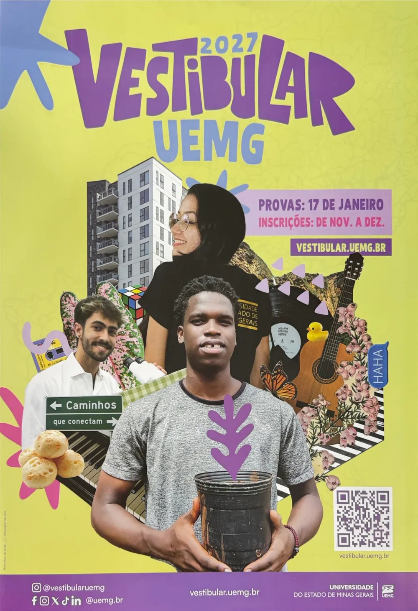

Vestibular 2027 Estude na UEMG, aqui em Guanhães
A Universidade do Estado de Minas Gerais é pública e gratuita. Na Unidade Guanhães há dois cursos de bacharelado, Direito e Engenharia Civil, à noite, para quem quer se formar sem sair da região.

O edital ainda não saiu. O que está nesta página é o que a UEMG já divulgou: as datas do cartaz e as regras aprovadas pelo Conselho Universitário. As datas exatas de inscrição e o cronograma completo entram aqui assim que o edital for publicado em vestibular.uemg.br.
Datas do Vestibular 2027
- Inscrições, pela internet, no site do vestibular. As datas exatas saem no edital.
- Pedido de isenção da taxa, marcando a opção e o termo de compromisso no próprio formulário
- Provas
- Resultado e pré-matrícula, conforme o edital
R$ 30, ou de graça com a isenção
A taxa do Vestibular 2027 é de R$ 30,00, o mesmo valor do ano anterior. Quem se encaixa em pelo menos um destes critérios pode pedir a isenção:
Escola municipal, estadual ou federal.
Renda familiar bruta por pessoa igual ou menor que um salário mínimo e meio.
- Peça na hora da inscrição Marque a isenção e aceite o termo de compromisso, dizendo que atende a um dos critérios. A isenção vale na hora.
- Guarde os comprovantes Os documentos só são pedidos na pré-matrícula, se você for convocado. A matrícula depende deles.
- Concorreu pelo PROCAN ou pela Inclusão Regional? Não precisa de documento extra para a isenção: a banca já analisou a sua documentação.
Como são divididas as vagas
Vestibular UEMG
75% das vagas
Prova própria da UEMG, em 17 de janeiro. Tem ampla concorrência, reserva de vagas do PROCAN e Inclusão Regional.
SiSU
25% das vagas
Com a nota do ENEM. No SiSU todas as vagas da UEMG são de ampla concorrência.
Dentro do Vestibular UEMG
Aberta a todos os candidatos.
Para pessoas de baixa renda, egressos de escola pública, negros, quilombolas, indígenas, ciganos e pessoas com deficiência. Você escolhe a categoria e envia os documentos na inscrição. A divisão por categoria sai no site do vestibular.
Para quem mora em Minas Gerais e fez os três anos do ensino médio em escola pública mineira (estadual, municipal ou federal). Também se escolhe na inscrição, com comprovante de endereço e histórico.
Cada curso tem vagas a mais, além das outras, para pessoas trans.
Fonte: notícia "Definido valor da taxa de inscrição e da distribuição das vagas" e páginas do PROCAN, da Inclusão Regional e da isenção, em vestibular.uemg.br. Os documentos de cada categoria estão lá.
O que dá para estudar aqui
Direito
10 semestres e 4.230 horas, com estágio no Núcleo de Práticas Jurídicas. A primeira turma da Unidade se forma em 2026.
Engenharia Civil
10 semestres e 3.750 horas, com estágio supervisionado a partir do 6º período.
Você não fica sozinho
Auxílios para permanecer no curso
O PEAES paga auxílios de moradia, transporte, alimentação, inclusão digital e outros, para renda familiar de até 1,5 salário mínimo por pessoa. O NAE ajuda a entender e a montar a documentação.
O NAE acompanha você
Acolhimento, apoio pedagógico, assistência estudantil e acessibilidade, do primeiro dia até a formatura.
Mais que sala de aula
Bolsas, monitoria, projetos de extensão, seminário de pesquisa e intercâmbio fazem parte da vida na universidade.
Fale com o NAE
O NAE ajuda a entender o vestibular, a isenção e a reserva de vagas.
- Onde
- Sala do NAE, no Prédio do Administrativo da UEMG Guanhães. Terças e quintas, das 18h às 19h
- nae.guanhaes@uemg.br
O que vale é sempre o edital publicado pela UEMG em vestibular.uemg.br.